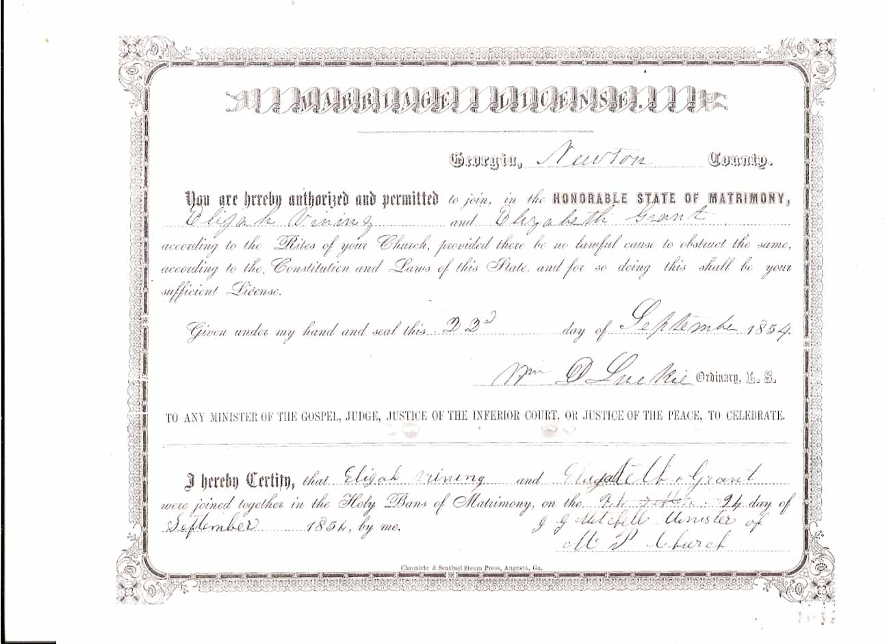

Marriage Data
Marriage certificates for Elijah H. Vining and wives 1, 2, and 3:
Census Data
| 1860 | 1870 | 1880 | 1890 | 1900 | 1910 | |
| Elijah H. Vining | 27 | 38 | 48 | dead | ||
| Elizabeth J. (Grant) Vining | 23 | |||||
| P. M[issourie?]. (Turner) Vining | 28 | |||||
| Emily F. (Bentley) Vining | 42 | ? | ? | ? | ||
| Mary [E. or P.?] Vining | 4 | 15 | 24 | ? | ? | ? |
| John F. Vining | 1 | 14 | 21 | ? | ? | ? |
| Elijah H. Vining Jr. | 6 m. | 12 | [19 or 21] [see note below] |
? | [married and living in separate household] | |
| Nancy Vining | 11 | 18 | ? | ? | ? | |
| William S. Vining | 10 | 16 | ? | [married and living in separate household] | ||
| Thomas J. Vining | 8 | 13 | ? | ? | ? | |
| M[e or a?]lvina Vining | 6 | 14 | ? | ? | ? | |
| Woodson Vining | 1 | 10 | ? | ? | ? | |
| Martha Vining | 9 | ? | ? | ? | ||
| Elizabeth Vining | 6 | ? | ? | ? | ||
| Fanny Vining | 2 | ? | ? | ? | ||
| Henry Bentley Vining | ? | ? | ? |


Death Data
Gravestone for Elijah H. Vining, in Liberty Cemetery, Porterdale, Newton County, Georgia (from Find A Grave):